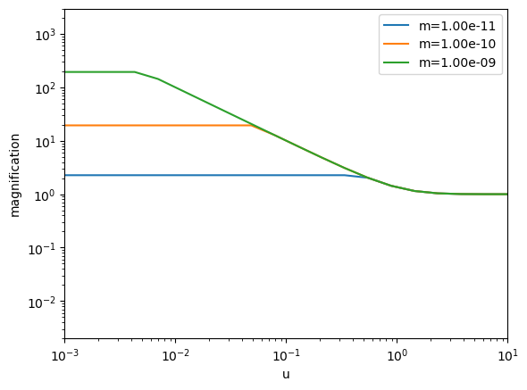

This module includes utility functions that are used across multiple modules, such as coordinate transformations, interpolation functions, and statistical analysis tools.
rs = np.logspace(-1, 2, 100)vel_disps = np.array([velocity_dispersion_m31(r) for r in rs])plt.plot(rs, vel_disps)plt.xscale('log')plt.yscale('log')plt.xlim(0.1, 100)plt.ylabel(r'$\sigma_v$ (km/s)')plt.xlabel(r'$r$ (kpc)')plt.title('Velocity Dispersion of M31, NFW')plt.show()
#test that galactic center is at (0, 0, 0) for l=b=0test_eq(get_primed_coords(rEarth, 0, 0), (0, 0, 0))#test that earth's distance from galactic center is rEarth, even in primed coordinatestest_close(np.sum(np.array(get_primed_coords(0))**2)**(1/2), rEarth)#test eq.4 of appendix in https://arxiv.org/pdf/1701.02151.pdftest_close(einstein_rad(100, 1e-8, dsM31)*(3600*180/ np.pi)/100, 3e-8, eps=1e-8)
r_s =2.25e-11# Solar radius in kpcd_s =770# in kpcd_l =770/2# in kpcm_l =1e-10# in solar massesr_ein = einstein_rad(d_l, m_l, d_s)theta_s = r_s/d_stheta_l = r_ein/d_lprint(theta_s/theta_l)
#Ratio of angular extent of source and lens in plane of lens# rho == theta_s/theta_lrhos = np.linspace(0.1, 3, 20)u_ts_new = [u_t_finite_new(rho) for rho in rhos]
#Test eq. 7 of https://arxiv.org/pdf/1905.06066.pdftest_eq(magnification_wave(2, 0), np.pi*2/(1- np.exp(-np.pi*2)))#Test that for small wavelength, there is essentially no magnificationtest_close(magnification_wave(1e-5, 1),1, eps=1e-3)#Test that for large impact parameter, there is essentially no magnificationtest_close(magnification_wave(10, 10),1, eps=1e-3)
u =1m_pbh =1e-11lam =6000dl =1ds =770A_thresh =1.34print(magnification_finite_wave(m_pbh, lam, u, dl, ds))print(u_t_finite_wave(m_pbh, lam, dl, ds))print(u_t_finite(m_pbh, dl, ds))
us = np.linspace(0,5,30)mags_point = [magnification(u) for u in us]mags_finite = [magnification_finite(m_pbh, lam, u, 6, ds) for u in us]mags_finite_wave = [magnification_finite_wave(m_pbh, lam, u, 1, ds) for u in us]ut_finite = u_t_finite(m_pbh, lam, 6, ds)ut_finite_wave = u_t_finite_wave(m_pbh, lam, 1, ds)
us = np.logspace(-3,1,20)for m in np.logspace(-11, -9, 3): mags =[magnification_wave(w_func(m, lam), u) for u in us] plt.plot(us, mags, label=f'm={m:.2e}')plt.xscale('log')plt.yscale('log')plt.xlabel('u')plt.ylabel('magnification')plt.xlim(1e-3, 1e1)plt.ylim(2e-3, 3e3)plt.legend()plt.show()

dls = np.logspace(-2, 2, 30)uts_finite = [u_t_finite(m_pbh, lam, dl, ds) for dl in dls]